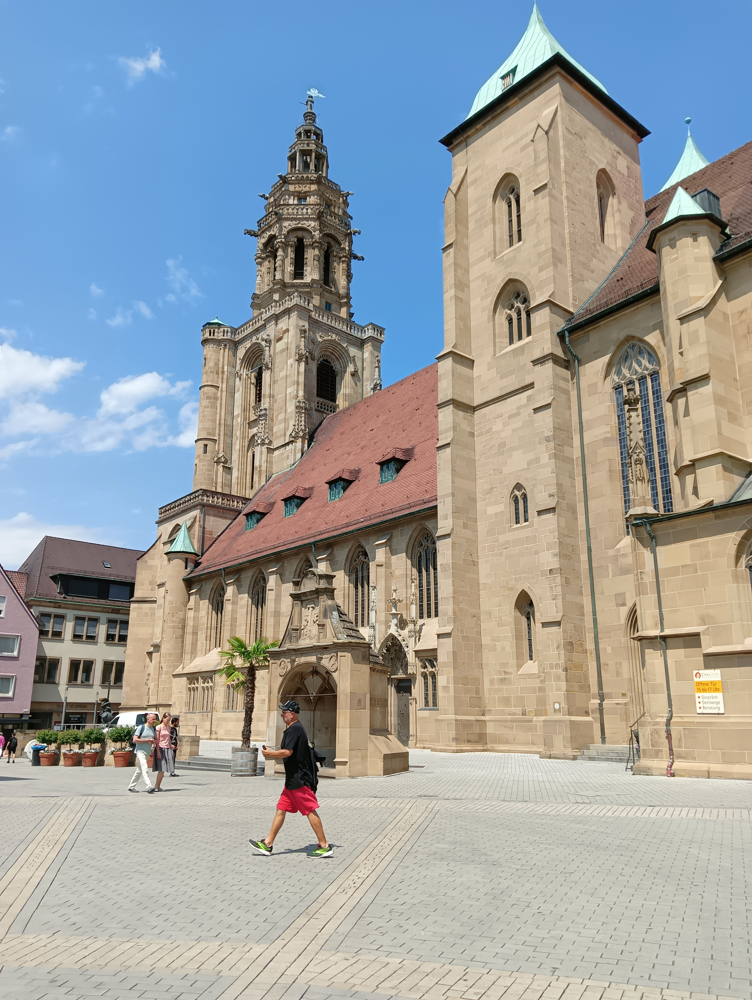

Negara Jerman
4 Juli 2023
Hohebuch
Aktivitas senam sore di asrama

8 Juli 2023
Museum Mercedes-Benz
Mengunjungi museum mobil di Waldenburg

8 Juli 2023
Stuttgart
Perjalanan ke Stuttgart's Palace Square
11 Juli 2023
Das Science Center - experimenta
Mengunjungi pusat sains di Heilbronn

11 Juli 2023
Heilbronn
Mengelilingi kota dan universitas di Heilbronn
15 Juli 2023
Nuremberg
Mengunjungi kota Nuremberg

16 Juli 2023
Waldenburg
Mendaki pegunungan kota Waldenburg

17 Juli 2023
Schwabisch Hall
Mengelilingi kota Schwabisch Hall di minggu terakhir